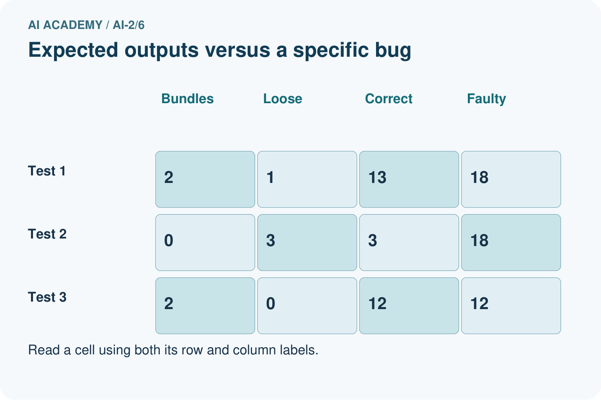
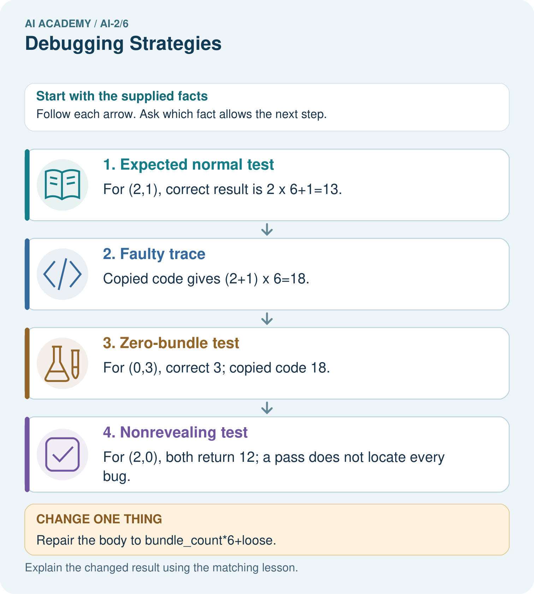

AI Academy · Level 2 · Grade 7 · Week 6 · Teacher guide
Debugging Strategies
Learn to understand, design, build, test and explain AI systems responsibly.
Project: Transparent Book Recommender
Teacher guide · 1 of 7
Debugging Strategies
Teach the learning cycle
Primary target: Design revealing tests for a function
| Session | Sequence and minutes | Resources |
|---|---|---|
| Session 1 · Understand · 45 min | 0–7: recall and prerequisite; 7–15: inspect the concrete case and predict; 15–30: teacher models the worked trace; 30–40: learners explain a step using the text and visual; 40–45: check the core idea. | Sections 1–6; record the brief recall in the workbook. |
| Session 2 · Practise · 45 min | 0–5: retrieve the procedure; 5–15: W2 completion practice; 15–23: explain and check with a partner; 23–30: each learner answers the misconception check; 30–40: targeted reteaching or a harder variation; 40–45: prepare the investigation. | Sections 7–10; use the matching workbook W2 and misconception check. |
| Session 3 · Investigate and transfer · 45 min | 0–5: retrieve the decision rule; 5–20: investigate or trace; 20–30: start the independent case; 30–38: connect the project; 38–43: act on feedback; 43–45: plan the return check. | Sections 9 and 11–14. Give extra time to finish the full task set; use Section 15 when the week includes a coding lab. |
This is a starting allocation of 135 minutes, not a validated duration. Preserve all named topics. Schedule extra time for connected examples, the full investigation, independent cases and project building. Repeated copies of a case share one recorded attempt; they are not new evidence.
Case exposure check: this source example appears in ai-2/6, python-bridge/12. Reuse a familiar case for recall or modelling; verify that the case used to assess transfer has not already received feedback.
Retrieval answer guidance
Loops and Stopping
Without opening the old lesson, explain one key idea from Loops and Stopping. Give an example and a mistake that the idea helps you avoid.
Look for: Trace variable values before and after each loop iteration
Reference example, not the only acceptable wording: 2, 3 and 4; the stop value is excluded. The body runs three times.
Branching Logic
Without opening the old lesson, explain one key idea from Branching Logic. Give an example and a mistake that the idea helps you avoid.
Look for: Trace the selected branch in an if elif else chain
Reference example, not the only acceptable wording: if tests negative first; elif checks <= 12 only after that fails; else handles the rest. Unindented print runs after any selected branch, whose assignment gives label a value.
Use the student module and workbook section with this exact week title. The worked case, independent question and answers below form one aligned lesson sequence.
What the learner must demonstrate
Intended score is 3 per matching trait. Bug: score starts at 3 and adds 3 for each match. Give expected and actual results for 0,1,2 matches and repair the cause.
Concept to explain
Good debugging isolates a cause with controlled tests.
| Term | Meaning |
|---|---|
| bug | A defect that makes a program behave differently from its intended specification. |
| debug | Find and repair the cause of a program's incorrect behaviour. |
| controlled test | A test with specified inputs, conditions and expected measurements. |
| retest | Run a test again after a change or under specified new conditions. |
Prepare the class
Use the supplied scenario, student illustrations and blank paper. For numeric work, offer counters or a calculator after learners show the setup. Fictional records are supplied; personal data and paid accounts are unnecessary.
Allow 80 minutes: recall 8; explanation 12; worked demonstration 15; guided practice 20; independent assessment 15; project and reflection 10. Extend the lab into a second session when needed.
Preparation for the connected explanation
Teach Week 12 as a two-session investigation using fictional data. A function can pass one example by coincidence. Start with a written rule, calculate expected results independently, and include ordinary, zero and boundary cases. We will test a subtraction function under the contract 0 <= used <= capacity. Assess the three stated outcomes through the independent task, not by copying the worked result.
Readiness answer
7.
Python 3 editor with a fresh local practice file
Paper trace table and the student workbook
Fictional input records from this lesson; no real student identifiers
End goal for the pictorial case
By the end, I can test a function with expected values that distinguish a particular bug.
This added worked case illustrates the week’s main idea. Retain all original and connected topics; schedule its practice within the teaching cycle.
Teacher guide · 2 of 7
Explain the mechanism
Explain the mechanism
Input → Process → Output
Trace the information. At each stage, ask what changed and how you could test it.
Which stage could fail even when the other two are correct? Explain:
Predict first. Then check each step. A correct answer without visible reasoning is incomplete evidence.
1. Observed: wet-weather case recommends sandals.
2. Divide: input correct? yes. rain branch reached? no.
3. Cause: condition says rain = false instead of true.
4. Fix that condition only; rerun the original case and a dry-weather case.
Recalculate, retrace, or restate the reasoning in your own representation:
CHECK Did the evidence answer the exact question? Did the total, path, or source record stay consistent?
Concrete teaching case
Award two points per matching trait. A bug awards two for every trait.
Test one match and one nonmatch.
Exact explanation to model
Expected 2; buggy result 4. Put the addition inside the match condition. Test zero, one and two matches for 0,2,4.
Explain the added worked example
A function can pass one example by coincidence. Start with a written rule, calculate expected results independently, and include ordinary, zero and boundary cases. We will test a subtraction function under the contract 0 <= used <= capacity.
Each parenthesized group is a tuple, an ordered group of values. The loop unpacks each group into three names. Equality compares the actual result to the independently calculated expected result. The worked script prints True three times. An assert actual == expected could instead stop at the first mismatch with AssertionError.
Key terms
| Term | Meaning |
|---|---|
| Test case | Inputs and an expected result |
| Boundary | An edge of a permitted range |
| Regression | A previously working case that fails after a change |
| Assertion | A check that raises an error when its condition is false |
Model the reasoning aloud
Use the complete worked example below before asking learners to complete W2. Reveal a small part, invite a prediction, then explain the deciding step. These teacher notes contain solutions; do not reveal the independent case answer during modelling.
| Thinking move | Teacher prompt |
|---|---|
| Plan | What is given? What is the question? Which procedure fits these facts? |
| Do | Point to each input and intermediate step in the worked trace. Name the rule that allows the next step. |
| Check | Does the output answer the question? Which assumption or limitation prevents a larger claim? |
Use the diagram and verbal explanation together. Ask learners to match a sentence to a specific visual step; do not assign learners fixed visual or auditory learning styles.
A pictorial worked case: Debugging Strategies
A fictional shelf function should count books in complete bundles plus loose books.
The facts we will use
Correct definition: shelf(bundle_count,loose) returns bundle_count*6+loose.
Faulty copied body returns (bundle_count+loose)*6. Predict tests before running.


Read the picture one step at a time
Why this result follows
Test cases need not all expose the same error. Here loose books must be added after multiplying bundles. A zero-loose case cannot distinguish the two formulas because multiplying zero loose books changes nothing. Keep expected and actual columns so an observed output does not quietly become its own expected answer.
What this example does not establish
These three tests check a specified formula and bug; they do not prove correct handling of every type or invalid request.
Change one thing in the pictured case
Change: Repair the body to bundle_count*6+loose.
Prediction: Expected results for (2,1),(0,3),(2,0) are 13,3,12.
Reason: Only bundles are groups of six; loose books are counted individually.
Ask while showing the picture
Cover the result. Ask learners to name the inputs and predict the next step. Uncover one step, connect the icon to the actual procedure, and explain its evidence. Then change the supplied condition and compare. The picture is a representation; it does not document execution of a real AI model.
Teacher guide · 3 of 7
Demonstrate and guide practice
Demonstrate and guide practice
Board sequence
Write the given facts: Award two points per matching trait. A bug awards two for every trait.
Write the question to explain: Test one match and one nonmatch.
Reveal after predictions: Expected 2; buggy result 4. Put the addition inside the match condition. Test zero, one and two matches for 0,2,4.
Keep for an independent attempt: A loop should run four times but runs five. You change its colour and stopping condition at once. Which single change is relevant to test first?
Classroom dialogue
Ask: Which facts are given, and which would we have to assume? Learners mark relevant details before discussing answers.
Say: Predict first. Show the rule, information path or calculation that would produce the result. A correct guess is not yet an explanation.
Reveal reasoning one step at a time. Explain why a tempting alternative fails. Write units and denominators for arithmetic, trace conditions for decisions, and identify supporting sources for claims.
In pairs, one learner solves while the other checks evidence; exchange roles. Remove the worked answer before independent assessment.
Model these guided questions
It passes (8, 3) but fails (8, 8), returning 5 instead of 0. Exit: No. Negative counts are outside our nonnegative-input contract and were not tested; rejection behavior must first be defined.
Case-specific teaching sequence
| Stage | Teacher action |
|---|---|
| Session 1 start to 7 minutes | Retrieve the prerequisite and explain the purpose in the opening section. |
| 7 to 20 minutes | Read the worked example and diagram; ask learners to trace each step aloud. |
| 20 to 33 minutes | Complete W1 and W2, then compare predictions with observed results. |
| 33 to 45 minutes | Collect the guided prediction before running; discuss a mismatch and its cause. |
| Session 2 start to 8 minutes | Retrieve the main rule without showing the previous answer. |
| 8 to 20 minutes | Use W3 to diagnose and repair the stated failure; rerun an earlier case. |
| 20 to 35 minutes | Collect W4 independently, including code or plan, predictions and explanations, before hints. |
| 35 to 45 minutes | Discuss W5 and the exit; use the fresh retry when support was needed. |
Reduce help deliberately
Completion task: A faulty function always returns 4. Which of your three cases pass and fail?
Teacher check: Only (6, 2) passes. The full and unused cases fail.
Start by identifying the given inputs together. Leave the intermediate steps blank. If needed, model one step, then withdraw that help on the next step. Move to a full trace only when the partial trace is understood. For partners, alternate explainer and checker; collect a response from every learner before discussion.
Individual reasoning check
Use the worked case for Testing and debugging functions. Proposed explanation: “A successful run proves the conclusion”. Decide whether this explanation is supported. Point to the step or supplied fact that decides; explain your repair if needed.
Expected correction: Passing this small suite supports these particular cases. It neither proves every allowed input correct nor checks invalid input handling. A test outside the contract needs a separately specified expected behavior.
Collect explanations, not only yes/no votes. If a misunderstanding is common, re-model the relevant step for the class. If it affects a few learners, give a short targeted group explanation while others solve a more demanding variation.
Pictorial practice question
Which test most directly isolates the handling of loose books, and what should it produce?
Reasoned teacher answer
(0,3) isolates loose books: expected 3. The faulty body gives 18.
Changed-case reasoning: Expected results for (2,1),(0,3),(2,0) are 13,3,12. Only bundles are groups of six; loose books are counted individually.
Collect each learner’s explanation before discussion. Use the first missing connection between input, deciding step and result to choose support. This question is worked-case practice, not fresh mastery evidence.
Teacher guide · 4 of 7
Run the weekly evidence lab
Run the weekly evidence lab
Words You Can Use to Reason
A definition matters when you can recognize the idea, use it, and contrast it with a near-miss.
Predict → Test → Record → Explain
Keep expected and actual results separate. Surprises are useful data when recorded honestly.
Use normal, boundary, and unexpected test cards. Mark the first step where expected and actual behavior differ; change one cause; rerun all three.
What did the hardest test teach you that the normal test did not?
Make the lab runnable
Use the concrete case as the shared normal case and the independent question as a second case. Each pair creates a boundary or missing-information case and predicts its result before testing. Keep the expected result separate from an observed mistake.
| Record | What to capture |
|---|---|
| Input or evidence | Exact data, instruction or claim |
| Expected result | Answer or safe fallback declared before the run |
| Observed result | Actual result, including errors |
| Explanation | Rule, calculation or evidence explaining the outcome |
| Next test | One justified change and a new prediction |
Diagnose and reteach
For guessing, return to given facts and request a trace. For vocabulary without application, use one example and one non-example. For arithmetic errors, check the setup before the calculation. Finish with a different uncoached case before recording mastery.
Address these additional misconceptions
A successful run proves the conclusion: Passing this small suite supports these particular cases. It neither proves every allowed input correct nor checks invalid input handling. A test outside the contract needs a separately specified expected behavior.
Matching the example is enough: Require the new W4 case, explicit predictions and an explanation. Fresh retry: bundles * 3 + singles with (3, 1), (0, 1), (3, 0) expects 10, 1, 9. A constant return 10 passes only the first.
A convenient shortcut preserves meaning: A faulty return capacity + used gives 11, 16 and 8. The unused case passes even though the rule is wrong. Repair the operator to subtraction and rerun all three cases. Never change an expected result merely to match faulty output.
Match the support to the first error
| What the response shows | Next teaching action |
|---|---|
| Missing or misread facts | Read the case aloud, mark supplied versus unknown facts, and let the learner restate it. |
| Wrong procedure | Return to the deciding step in the worked case. Contrast it with the proposed incorrect explanation. |
| Arithmetic or implementation error | Trace intermediate values or lines; preserve the first mismatch and retry that step. |
| Correct result without a reason | Ask for a trace and a changed case before marking independent understanding. |
| An unsupported wider claim | Ask which supplied evidence supports the claim and which further observation would be needed. |
Offer an oral explanation, drawing, enlarged visual or fewer examples when that removes a reading/writing barrier. Keep the same reasoning goal. Stretch secure learners by changing a boundary or assumption and asking them to defend the effect, not simply by assigning more of the same questions.
Teacher guide · 5 of 7
Assess and explain the answers
Assess and explain the answers
Worked case answer
Expected 2; buggy result 4. Put the addition inside the match condition. Test zero, one and two matches for 0,2,4.
Independent question
A loop should run four times but runs five. You change its colour and stopping condition at once. Which single change is relevant to test first?
Expected independent answer
Test the stopping condition first while preserving the other code. Trace the counter at the boundary; changing colour provides no evidence about repetition.
What counts as evidence
| Criterion | 0 points | 1 point | 2 points |
|---|---|---|---|
| Result | Incorrect or absent | Partly correct | Correct with necessary conditions |
| Reasoning | No supporting trace | Some steps | Clear mechanism, calculation or source support |
| Limit | Overclaims certainty | Vague limitation | Relevant uncertainty or missing fact |
| Transfer | Copies without adapting | Adapts with prompts | Solves a changed case independently |
Use 6/8 as a classroom checkpoint, with 2 required for both Result and Reasoning. This is a proposed teaching rule, not a validated certification threshold. Do not count a coached answer as independent mastery; correct unsafe or unsupported claims regardless of total.
Feedback
Ask the learner to find the evidence that challenges this claim: “Any visible change helps diagnose the cause.” Keep the first attempt and an uncoached retry separate.
Original transfer answer
Expected 0,3,6; actual 3,6,9. Initialise score to 0, keeping the per-match addition. The zero-match case isolates the initialisation error. Rerun all three tests; changing only a displayed result would leave the cause intact.
Explanations for the additional workbook examples
W1 Write expectations
Give expected results for remaining(6, 2), remaining(6, 6) and remaining(6, 0).
4, 0 and 6.
Apply the specified subtraction rule to each pair: 6 - 2 = 4, 6 - 6 = 0, and 6 - 0 = 6. Label them ordinary, full and unused cases. These expected answers come from the contract before the program is run.
W2 Find a revealing case
A faulty function always returns 4. Which of your three cases pass and fail?
Only (6, 2) passes. The full and unused cases fail.
Compare the faulty actual result 4 with each independently expected result. It matches the ordinary case expecting 4, but not the full case expecting 0 or unused case expecting 6. One successful case therefore does not establish that the subtraction rule was implemented.
W3 Repair and retest
A faulty function adds capacity and used. For (6, 2), state actual and expected. Repair it and name a regression case.
Actual 8, expected 4. Subtract used; rerun a prior case such as (6, 0), expecting 6.
W4 Test a new function independently
Define stock(packs, loose) to return packs * 4 + loose. Create expected tests for (2, 3), (0, 3), (2, 0), then show which detects a faulty packs + loose body.
Expected 11, 3, 8. Faulty results 5, 3, 2; first and third reveal it. Use independent expectations in the test loop.
W5 Limit the conclusion
All three stock tests pass. Does that prove correct handling of negative counts?
No. Negative counts are outside our nonnegative-input contract and were not tested; rejection behavior must first be defined.
Assess independent transfer
Selected case: Define stock(packs, loose) to return packs * 4 + loose. Create expected tests for (2, 3), (0, 3), (2, 0), then show which detects a faulty packs + loose body.
Selected case answer
Expected 11, 3, 8. Faulty results 5, 3, 2; first and third reveal it. Use independent expectations in the test loop.
| Dimension | Evidence required |
|---|---|
| Explanation | Names the applicable idea or procedure and ties it to the supplied facts. |
| Trace and result | Preserves the given inputs and shows the relevant intermediate steps; distinguishes a prediction from an observed execution. |
| Limits | States the assumptions, missing evidence or conditions under which the result would change. |
Record each dimension as not yet, with support, or independent. Accept a valid alternative procedure with a defensible trace. Do not penalise an honestly recorded model failure if the learner correctly explains its evidence and limits.
Feedback that the learner uses
Name the earliest unsupported step and give one action to repair it. Have the learner make that repair now and explain why. Then assess the relevant skill on a fresh, fully specified case. Confirm it was not previously practised with feedback; solve and check the new case before assigning it. A follow-up design prompt is a starting brief, not automatically an equivalent test.
Teacher guide · 6 of 7
Connect and extend learning
Connect and extend learning
Transparent Book Recommender
When a ranking surprises you, inspect feature values, weights, arithmetic, and sorting separately.
Keep the decision, input, result, explanation and remaining limitation in the project evidence record. Retrieve this record next week rather than restarting the project.
Support and stretch
Trace one record or condition at a time with counters and labelled columns. Stretch: introduce a tie, boundary or missing field and declare its handling policy before rerunning.
Exit reflection
Ask for one decision the learner can now justify and one situation requiring more evidence or human review. Confidence ratings are separate from correct independent performance.
Bridge to the next week
Next: Week 7: Rows, Columns, and Data Types. Retrieve today’s evidence and identify what carries forward and what is new.
Support and fresh reassessment
Provide a blank inputs expected actual table. Extension: use assert for the same cases and explain why only the first failure is reported.
Independent W4 evidence: Expected 11, 3, 8. Faulty results 5, 3, 2; first and third reveal it. Use independent expectations in the test loop. Record whether the learner needed no help, a hint or explanation. Fresh retry: bundles * 3 + singles with (3, 1), (0, 1), (3, 0) expects 10, 1, 9. A constant return 10 passes only the first.
Next week: Rows columns and schemas. Reuse this week's explicit contracts and evidence.
Plan the delayed return
Suggested return points in this level: ai-2/7, ai-2/9, ai-2/12. Use actual classroom dates, adjusting for holidays and gaps. One, three and six teaching weeks are scheduling choices, not a claimed optimal spacing.
At a delayed check, ask for the idea from memory and a changed application. Compare with the earlier independent response and record support used. For a new level, revisit the previous capstone before checking the new prerequisites.
| Record | Teacher evidence |
|---|---|
| Learner code and date | |
| Concept and case used; prior exposure | |
| Explanation / trace / limits | |
| Support and first repair | |
| Changed case and delayed outcome | |
| Next teaching action |
Use the evidence to choose reteaching or the next step. A completed page, confidence rating or attractive project does not by itself demonstrate understanding.
Project evidence from this case
Test the recommender’s helper functions with normal, zero and boundary inputs before debugging the whole application.
Teacher guide · 7 of 7
Prepare, teach and assess
Teaching target: Design revealing tests for a function
Prepare the labelled worked-case picture, the matching workbook, fictional input cards and a place for individual responses. No paid AI account is required for the paper reasoning activities.
| Session | Plan | Resources |
|---|---|---|
| Session 1 · Understand · 45 min | 0–7: recall and prerequisite; 7–15: inspect the concrete case and predict; 15–30: teacher models the worked trace; 30–40: learners explain a step using the text and visual; 40–45: check the core idea. | Sections 1–6; record the brief recall in the workbook. |
| Session 2 · Practise · 45 min | 0–5: retrieve the procedure; 5–15: W2 completion practice; 15–23: explain and check with a partner; 23–30: each learner answers the misconception check; 30–40: targeted reteaching or a harder variation; 40–45: prepare the investigation. | Sections 7–10; use the matching workbook W2 and misconception check. |
| Session 3 · Investigate and transfer · 45 min | 0–5: retrieve the decision rule; 5–20: investigate or trace; 20–30: start the independent case; 30–38: connect the project; 38–43: act on feedback; 43–45: plan the return check. | Sections 9 and 11–14. Give extra time to finish the full task set; use Section 15 when the week includes a coding lab. |
Before class, solve the supported practice: A faulty function always returns 4. Which of your three cases pass and fail?
Reasoned practice answer: Only (6, 2) passes. The full and unused cases fail.
Check every learner before discussion: Use the worked case for Testing and debugging functions. Proposed explanation: “A successful run proves the conclusion”. Decide whether this explanation is supported. Point to the step or supplied fact that decides; explain your repair if needed.
Misconception repair: Passing this small suite supports these particular cases. It neither proves every allowed input correct nor checks invalid input handling. A test outside the contract needs a separately specified expected behavior.
Support: read the exact case aloud, enlarge the labelled picture, supply input cards and model only the first deciding step. Accept a spoken explanation or drawing; retain the reasoning goal.
Extension: Repair the body to bundle_count*6+loose. Require a prediction and a reason before comparing. Expected result: Expected results for (2,1),(0,3),(2,0) are 13,3,12. Reason: Only bundles are groups of six; loose books are counted individually.
Independent assessment: withhold the reserved answer until the learner has attempted the new case. Record support separately from correctness.
| Criterion | Not yet | With support | Independent |
|---|---|---|---|
| Explanation | Names an answer without a deciding fact | Uses a hint to link fact and decision | Explains the deciding fact in own words |
| Trace or test | Cannot connect input and result | Completes steps with prompts | Traces or tests a changed case accurately |
| Limits and revision | Claims more than evidence supports | Names a limit after a prompt | States a defensible limit and useful next test |
Project checkpoint: Frame the need. Name the user, the problem, allowed inputs and a safe simple starting method.
Use the weekly teacher answer for topic-specific reasoning. A saved progress tick is an activity record; judge mastery from the learner’s explanation and evidence.